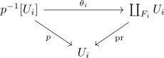

covering map as open map
Proposition
Let $B,E$ be topological spaces and $p: E \rightarrow B$ a covering map Then $p$ is an open map
Proof
Suppose $O \subseteq E$ is a neighbourhood of $x \in O$. Since by assumption, there exists an open cover $(U_i)$ of $B$, there exists an $U_i$ with $p(x) \in U_i$. Furthermore, $p^{-1}[U_i]$ is an neighbourhood of $x$, hence $O \cap p^{-1}[U_i]$ is an neighbourhood of $x$ both in $p^{-1}[U_i]$ and $E$. By assumption of $p$ being a covering map, there exists a homeomorphism $\varphi: p^{-1}[U_i] \cong F^{\delta} \times U_i$. This homeomorphism is an open map (cf. homeomorphism as continuous, open / closed Bijection), hence by composition of open maps and since projection as open map, we get, that by commutativity of

That
is a neighbourhood, hence $p$ is open.